孔子曰：“温故而知新”，在学习如何优化 UI 渲染之前，我们先来回顾一下在“卡顿优化”中学到的知识。关于卡顿优化，我们学习了 4 种本地排查卡顿的工具，以及多种线上监控卡顿、帧率的方法。为什么要回顾卡顿优化呢？那是因为 UI 渲染也会造成卡顿，并且肯定会有同学疑惑卡顿优化和 UI 优化的区别是什么。
在 Android 系统的 VSYNC 信号到达时，如果 UI 线程被某个耗时任务堵塞，长时间无法对 UI 进行渲染，这时就会出现卡顿。但是这种情形并不是我们今天讨论的重点，UI 优化要解决的核心是由于渲染性能本身造成用户感知的卡顿，它可以认为是卡顿优化的一个子集。
从设计师和产品的角度，他们希望应用可以用丰富的图形元素、更炫酷的动画来实现流畅的用户体验。但是 Android 系统很有可能无法及时完成这些复杂的界面渲染操作，这个时候就会出现掉帧。也正因如此我才希望做 UI 优化，因为我们有更高的要求，希望它能达到流畅画面所需要的 60 fps。这里需要说的是，即使 40 fps 用户可能不会感到明显的卡顿，但我们也仍需要去做进一步的优化。
那么接下来我们就来看看，如何让我们的 UI 渲染达到 60 fps？有哪些方法可以帮助我们优化 UI 渲染性能？
UI 渲染测量
通过上一期的学习，你应该已经掌握了一些 UI 测试和问题定位的工具。
-
测试工具：Profile GPU Rendering 和 Show GPU Overdraw，具体的使用方法你可以参考《检查 GPU 渲染速度和绘制过度》。
-
问题定位工具：Systrace 和 Tracer for OpenGL ES，具体使用方法可以参考《Slow rendering》。
在 Android Studio 3.1 之后，Android 推荐使用Graphics API Debugger（GAPID）来替代 Tracer for OpenGL ES 工具。GAPID 可以说是升级版，它不仅可以跨平台，而且功能更加强大，支持 Vulkan 与回放。
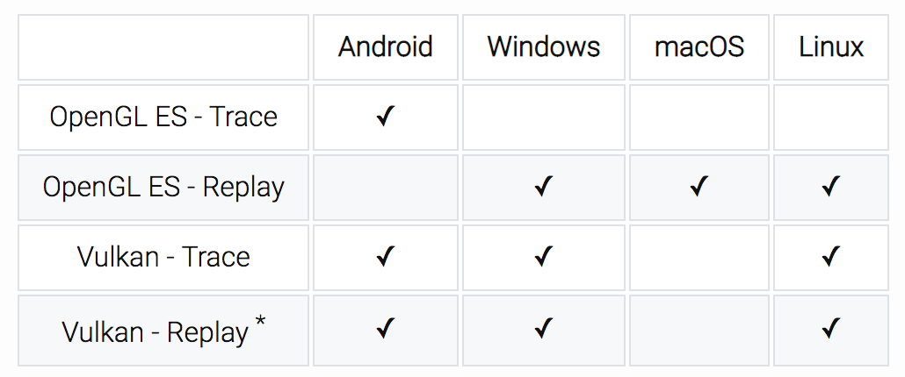
通过上面的几个工具，我们可以初步判断应用 UI 渲染的性能是否达标，例如是否经常出现掉帧、掉帧主要发生在渲染的哪一个阶段、是否存在 Overdraw 等。
虽然这些图形化界面工具非常好用，但是它们难以用在自动化测试场景中，那有哪些测量方法可以用于自动化测量 UI 渲染性能呢？
1. gfxinfo
gfxinfo可以输出包含各阶段发生的动画以及帧相关的性能信息，具体命令如下：
adb shell dumpsys gfxinfo 包名除了渲染的性能之外，gfxinfo 还可以拿到渲染相关的内存和 View hierarchy 信息。在 Android 6.0 之后，gxfinfo 命令新增了 framestats 参数，可以拿到最近 120 帧每个绘制阶段的耗时信息。
adb shell dumpsys gfxinfo 包名 framestats通过这个命令我们可以实现自动化统计应用的帧率，更进一步还可以实现自定义的“Profile GPU Rendering”工具，在出现掉帧的时候，自动统计分析是哪个阶段的耗时增长最快，同时给出相应的建议。
2. SurfaceFlinger
除了耗时，我们还比较关心渲染使用的内存。上一期我讲过，在 Android 4.1 以后每个 Surface 都会有三个 Graphic Buffer，那如何查看 Graphic Buffer 占用的内存，系统是怎么样管理这部分的内存的呢？
你可以通过下面的命令拿到系统 SurfaceFlinger 相关的信息：
adb shell dumpsys SurfaceFlinger下面以今日头条为例，应用使用了三个 Graphic Buffer 缓冲区，当前用在显示的第二个 Graphic Buffer，大小是 1080 x 1920。现在我们也可以更好地理解三缓冲机制，你可以看到这三个 Graphic Buffer 的确是在交替使用。
+ Layer 0x793c9d0c00 (com.ss.***。news/com.**.MainActivity) // 序号 // 状态 // 对象 // 大小 >[02:0x794080f600] state=ACQUIRED, 0x794081bba0 [1080x1920:1088, 1] [00:0x793e76ca00] state=FREE , 0x793c8a2640 [1080x1920:1088, 1] [01:0x793e76c800] state=FREE , 0x793c9ebf60 [1080x1920:1088, 1]继续往下看，你可以看到这三个 Buffer 分别占用的内存：
Allocated buffers:0x793c8a2640: 8160.00 KiB | 1080 (1088) x 1920 | 1 | 0x20000900 0x793c9ebf60: 8160.00 KiB | 1080 (1088) x 1920 | 1 | 0x20000900 0x794081bba0: 8160.00 KiB | 1080 (1088) x 1920 | 1 | 0x20000900这部分的内存其实真的不小，特别是现在手机的分辨率越来越大，而且还很多情况应用会有其他的 Surface 存在，例如使用了SurfaceView或者TextureView等。
那系统是怎么样管理这部分内存的呢？当应用退到后台的时候，系统会将这些内存回收，也就不会再把它们计算到应用的内存占用中。
+ Layer 0x793c9d0c00 (com.ss.***。news/com.**.MainActivity) [00:0x0] state=FREE [01:0x0] state=FREE [02:0x0] state=FREE那么如何快速地判别 UI 实现是否符合设计稿？如何更高效地实现 UI 自动化测试？这些问题你可以先思考一下，我们将在后面“高效测试”中再详细展开。
UI 优化的常用手段
让我们再重温一下 UI 渲染的阶段流程图，我们的目标是实现 60 fps，这意味着渲染的所有操作都必须在 16 ms（= 1000 ms／60 fps）内完成。
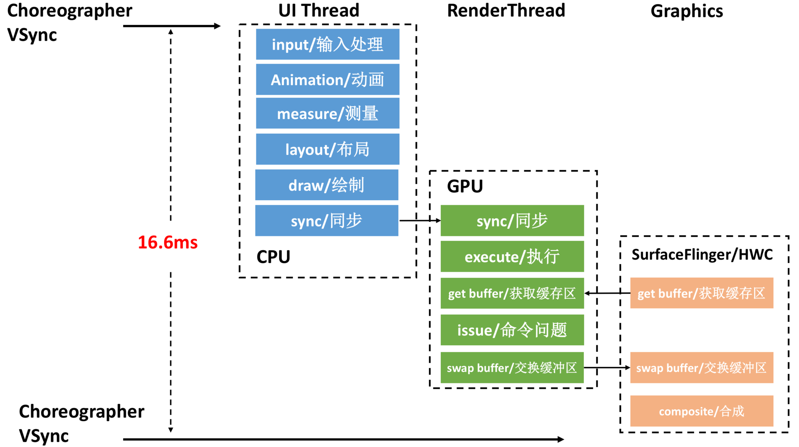
所谓的 UI 优化，就是拆解渲染的各个阶段的耗时，找到瓶颈的地方，再加以优化。接下来我们一起来看看 UI 优化的一些常用的手段。
1. 尽量使用硬件加速
通过上一期学习，相信你也发自内心地认同硬件加速绘制的性能是远远高于软件绘制的。所以说 UI 优化的第一个手段就是保证渲染尽量使用硬件加速。
有哪些情况我们不能使用硬件加速呢？之所以不能使用硬件加速，是因为硬件加速不能支持所有的 Canvas API，具体 API 兼容列表可以见drawing-support文档。如果使用了不支持的 API，系统就需要通过 CPU 软件模拟绘制，这也是渐变、磨砂、圆角等效果渲染性能比较低的原因。
SVG 也是一个非常典型的例子，SVG 有很多指令硬件加速都不支持。但我们可以用一个取巧的方法，提前将这些 SVG 转换成 Bitmap 缓存起来，这样系统就可以更好地使用硬件加速绘制。同理，对于其他圆角、渐变等场景，我们也可以改为 Bitmap 实现。
这种取巧方法实现的关键在于如何提前生成 Bitmap，以及 Bitmap 的内存需要如何管理。你可以参考一下市面常用的图片库实现。
2. Create View 优化
观察渲染的流水线时，有没有同学发现缺少一个非常重要的环节，那就是 View 创建的耗时。请不要忘记，View 的创建也是在 UI 线程里，对于一些非常复杂的界面，这部分的耗时不容忽视。
在优化之前我们先来分解一下 View 创建的耗时，可能会包括各种 XML 的随机读的 I/O 时间、解析 XML 的时间、生成对象的时间（Framework 会大量使用到反射）。
相应的，我们来看看这个阶段有哪些优化方式。
使用代码创建
使用 XML 进行 UI 编写可以说是十分方便，可以在 Android Studio 中实时预览到界面。如果我们要对一个界面进行极致优化，就可以使用代码进行编写界面。
但是这种方式对开发效率来说简直是灾难，因此我们可以使用一些开源的 XML 转换为 Java 代码的工具，例如X2C。但坦白说，还是有不少情况是不支持直接转换的。
所以我们需要兼容性能与开发效率，我建议只在对性能要求非常高，但修改又不非常频繁的场景才使用这个方式。
异步创建
那我们能不能在线程提前创建 View，实现 UI 的预加载吗？尝试过的同学都会发现系统会抛出下面这个异常：
java.lang.RuntimeException: Can't create handler inside thread that has not called Looper.prepare() at android.os.Handler.<init>(Handler.java:121)事实上，我们可以通过又一个非常取巧的方式来实现。在使用线程创建 UI 的时候，先把线程的 Looper 的 MessageQueue 替换成 UI 线程 Looper 的 Queue。
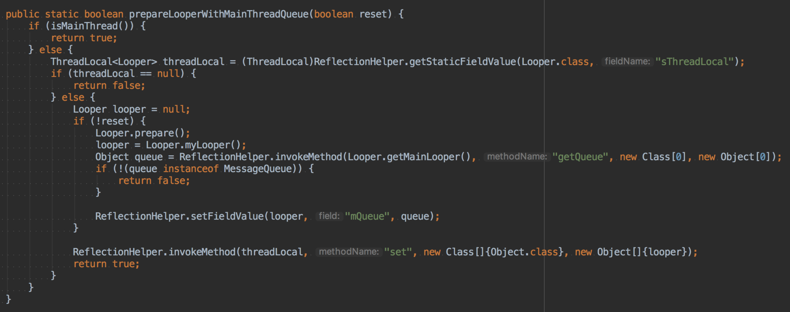
不过需要注意的是，在创建完 View 后我们需要把线程的 Looper 恢复成原来的。
View 重用
正常来说，View 会随着 Activity 的销毁而同时销毁。ListView、RecycleView 通过 View 的缓存与重用大大地提升渲染性能。因此我们可以参考它们的思想，实现一套可以在不同 Activity 或者 Fragment 使用的 View 缓存机制。
但是这里需要保证所有进入缓存池的 View 都已经“净身出户”，不会保留之前的状态。微信曾经就因为这个缓存，导致出现不同的用户聊天记录错乱。
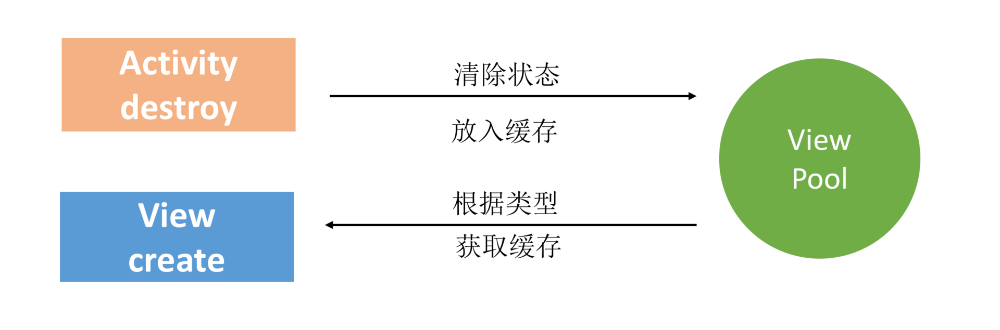
3. measure/layout 优化
渲染流程中 measure 和 layout 也是需要 CPU 在主线程执行的，对于这块内容网上有很多优化的文章，一般的常规方法有：
-
减少 UI 布局层次。例如尽量扁平化，使用
<ViewStub><Merge>等优化。 -
优化 layout 的开销。尽量不使用 RelativeLayout 或者基于 weighted LinearLayout，它们 layout 的开销非常巨大。这里我推荐使用 ConstraintLayout 替代 RelativeLayout 或者 weighted LinearLayout。
-
背景优化。尽量不要重复去设置背景，这里需要注意的是主题背景（theme)， theme 默认会是一个纯色背景，如果我们自定义了界面的背景，那么主题的背景我们来说是无用的。但是由于主题背景是设置在 DecorView 中，所以这里会带来重复绘制，也会带来绘制性能损耗。
对于 measure 和 layout，我们能不能像 Create View 一样实现线程的预布局呢？这样可以大大地提升首次显示的性能。
Textview 是系统控件中非常强大也非常重要的一个控件，强大的背后就代表着需要做很多计算。在 2018 年的 Google I/O 大会，发布了PrecomputedText并已经集成在 Jetpack 中，它给我们提供了接口，可以异步进行 measure 和 layout，不必在主线程中执行。
UI 优化的进阶手段
那对于其他的控件我们是不是也可以采用相同的方式？接下来我们一起来看看近两年新框架的做法，我来介绍一下 Facebook 的一个开源库 Litho 以及 Google 开源的 Flutter。
1. Litho：异步布局
Litho是 Facebook 开源的声明式 Android UI 渲染框架，它是基于另外一个 Facebook 开源的布局引擎Yoga开发的。
Litho 本身非常强大，内部做了很多非常不错的优化。下面我来简单介绍一下它是如何优化 UI 的。
异步布局
一般来说的 Android 所有的控件绘制都要遵守 measure -> layout -> draw 的流水线，并且这些都发生在主线程中。
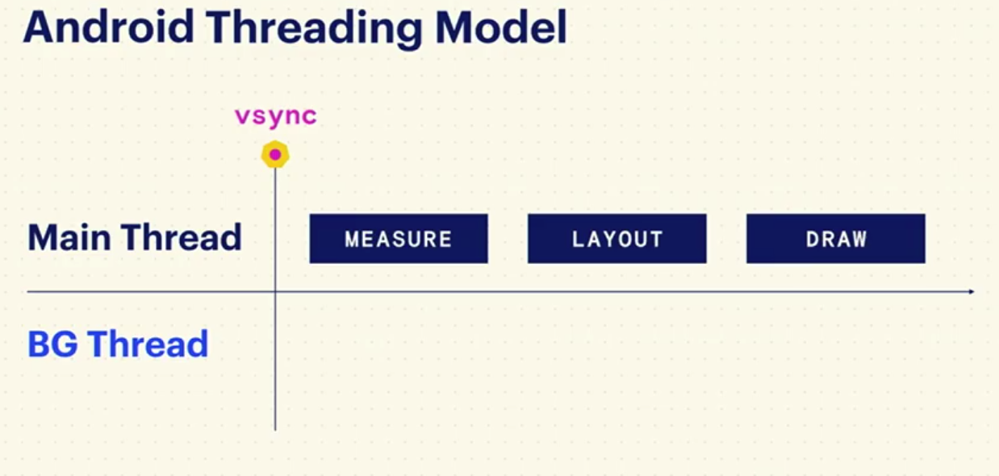
Litho 如我前面提到的 PrecomputedText 一样，把 measure 和 layout 都放到了后台线程，只留下了必须要在主线程完成的 draw，这大大降低了 UI 线程的负载。它的渲染流水线如下：
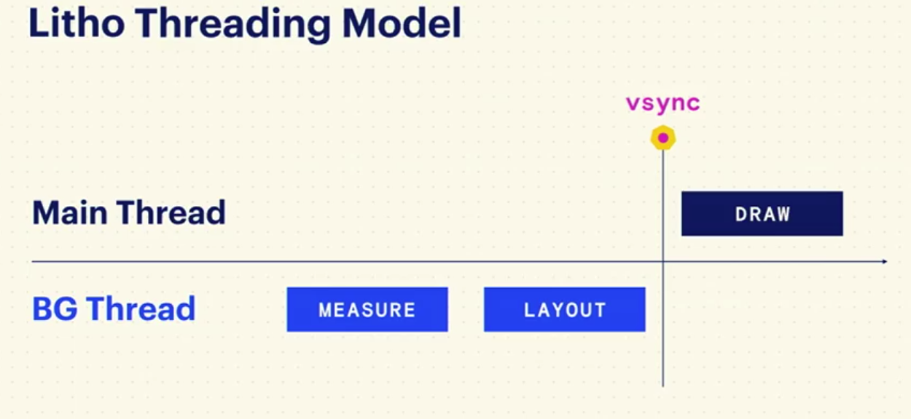
界面扁平化
前面也提到过，降低 UI 的层级是一个非常通用的优化方法。你肯定会想，有没有一种方法可以直接降低 UI 的层级，而不通过代码的改变呢？Litho 就给了我们一种方案，由于 Litho 使用了自有的布局引擎（Yoga)，在布局阶段就可以检测不必要的层级、减少 ViewGroups，来实现 UI 扁平化。比如下面这样图，上半部分是我们一般编写这个界面的方法，下半部分是 Litho 编写的界面，可以看到只有一层层级。
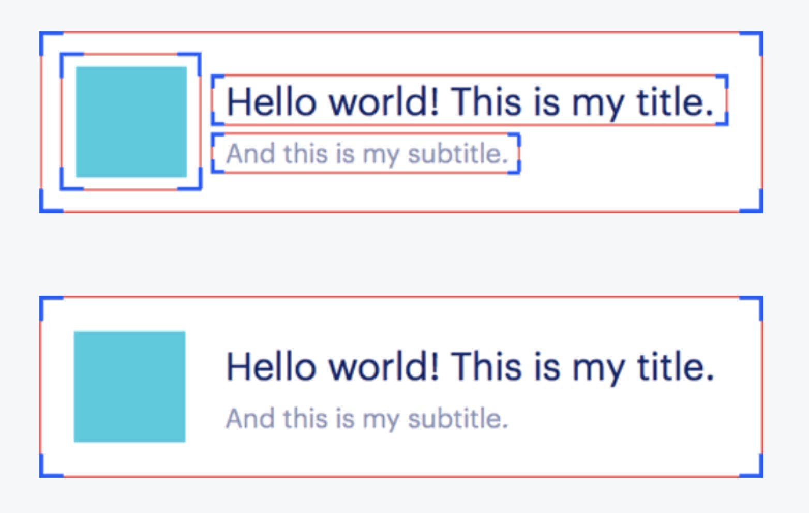
优化 RecyclerView
Litho 还优化了 RecyclerView 中 UI 组件的缓存和回收方法。原生的 RecyclerView 或者 ListView 是按照 viewType 来进行缓存和回收，但如果一个 RecyclerView/ListView 中出现 viewType 过多，会使缓存形同虚设。但 Litho 是按照 text、image 和 video 独立回收的，这可以提高缓存命中率、降低内存使用率、提高滚动帧率。
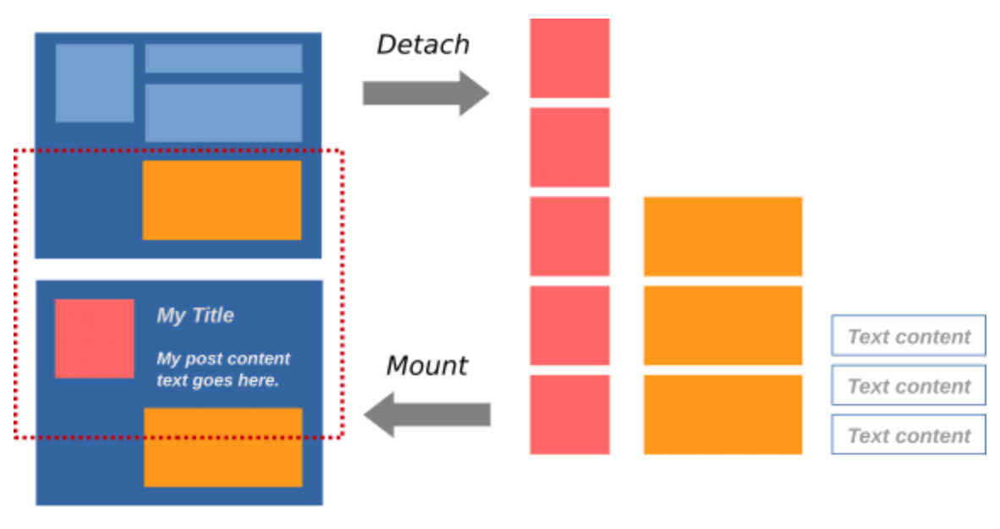
Litho 虽然强大，但也有自己的缺点。它为了实现 measure/layout 异步化，使用了类似 react 单向数据流设计，这一定程度上加大了 UI 开发的复杂性。并且 Litho 的 UI 代码是使用 Java/Kotlin 来进行编写，无法做到在 AS 中预览。
如果你没有计划完全迁移到 Litho，我建议可以优先使用 Litho 中的 RecyclerCollectionComponent 和 Sections 来优化自己的 RecyelerView 的性能。
2. Flutter：自己的布局 + 渲染引擎
如下图所示，Litho 虽然通过使用自己的布局引擎 Yoga，一定程度上突破了系统的一些限制，但是在 draw 之后依然走的系统的渲染机制。
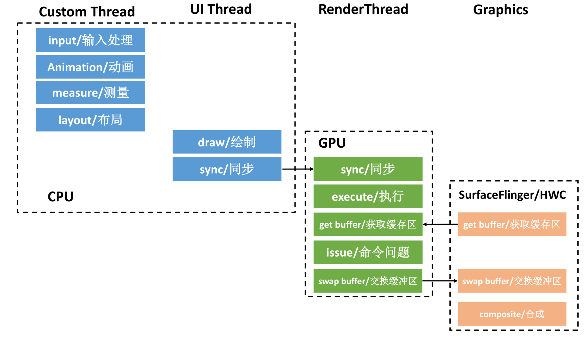
那我们能不能再往底层深入，把系统的渲染也同时接管过来？Flutter 正是这样的框架，它也是最近十分火爆的一个新框架，这里我也简单介绍一下。
Flutter是 Google 推出并开源的移动应用开发框架，开发者可以通过 Dart 语言开发 App，一套代码同时运行在 iOS 和 Android 平台。
我们先整体看一下 Flutter 的架构，在 Android 上 Flutter 完全没有基于系统的渲染引擎，而是把 Skia 引擎直接集成进了 App 中，这使得 Flutter App 就像一个游戏 App。并且直接使用了 Dart 虚拟机，可以说是一套跳脱出 Android 的方案，所以 Flutter 也可以很容易实现跨平台。
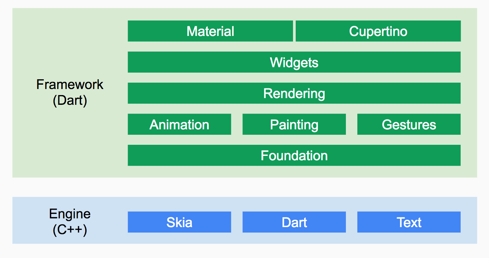
开发 Flutter 应用总的来说简化了线程模型，框架给我们抽象出各司其职的 Runner，包括 UI、GPU、I/O、Platform Runner。Android 平台上面每一个引擎实例启动的时候会为 UI Runner、GPU Runner、I/O Runner 各自创建一个新的线程，所有 Engine 实例共享同一个 Platform Runner 和线程。
由于本期我们主要讨论 UI 渲染相关的内容，我来着重分析一下 Flutter 的渲染步骤，相关的具体知识你可以阅读《Flutter 原理与实践》。
-
首先 UI Runner 会执行 root isolate（可以简单理解为 main 函数。需要简单解释一下 isolate 的概念，isolate 是 Dart 虚拟机中一种执行并发代码实现，Dart 虚拟机实现了 Actor 的并发模型，与大名鼎鼎的 Erlang 使用了类似的并发模型。如果不太了解 Actor 的同学，可以简单认为 isolate 就是 Dart 虚拟机的“线程”，Root isolate 会通知引擎有帧要渲染）。
-
Flutter 引擎得到通知后，会告知系统我们要同步 VSYNC。
-
得到 GPU 的 VSYNC 信号后，对 UI Widgets 进行 Layout 并生成一个 Layer Tree。
-
然后 Layer Tree 会交给 GPU Runner 进行合成和栅格化。
-
GPU Runner 使用 Skia 库绘制相关图形。
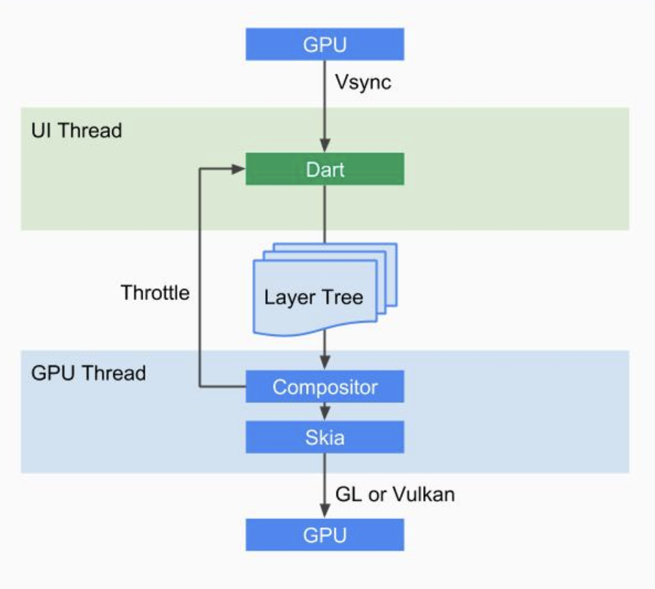
Flutter 也采用了类似 Litho、React 属性不可变，单向数据流的方案。这已经成为现代 UI 渲染引擎的标配。这样做的好处是可以将视图与数据分离。
总体来说 Flutter 吸取和各个优秀前端框架的精华，还“加持”了强大的 Dart 虚拟机和 Skia 渲染引擎，可以说是一个非常优秀的框架，闲鱼、今日头条等很多应用部分功能已经使用 Flutter 开发。结合 Google 最新的 Fuchsia 操作系统，它会不会是一个颠覆 Android 的开发框架？我们在专栏后面会单独详细讨论 Flutter。
3. RenderThread 与 RenderScript
在 Android 5.0，系统增加了 RenderThread，对于 ViewPropertyAnimator 和 CircularReveal 动画，我们可以使用RenderThead 实现动画的异步渲染。当主线程阻塞的时候，普通动画会出现明显的丢帧卡顿，而使用 RenderThread 渲染的动画即使阻塞了主线程仍不受影响。
现在越来越多的应用会使用一些高级图片或者视频编辑功能，例如图片的高斯模糊、放大、锐化等。拿日常我们使用最多的“扫一扫”这个场景来看，这里涉及大量的图片变换操作，例如缩放、裁剪、二值化以及降噪等。
图片的变换涉及大量的计算任务，而根据我们上一期的学习，这个时候使用 GPU 是更好的选择。那如何进一步压榨系统 GPU 的性能呢？
我们可以通过RenderScript，它是 Android 操作系统上的一套 API。它基于异构计算思想，专门用于密集型计算。RenderScript 提供了三个基本工具：一个硬件无关的通用计算 API；一个类似于 CUDA、OpenCL 和 GLSL 的计算 API；一个类C99的脚本语言。允许开发者以较少的代码实现功能复杂且性能优越的应用程序。
如何将它们应用到我们的项目中？你可以参考下面的一些实践方案：
总结
回顾一下 UI 优化的所有手段，我们会发现它存在这样一个脉络：
1. 在系统的框架下优化。布局优化、使用代码创建、View 缓存等都是这个思路，我们希望减少甚至省下渲染流水线里某个阶段的耗时。
2. 利用系统新的特性。使用硬件加速、RenderThread、RenderScript 都是这个思路，通过系统一些新的特性，最大限度压榨出性能。
3. 突破系统的限制。由于 Android 系统碎片化非常严重，很多好的特性可能低版本系统并不支持。而且系统需要支持所有的场景，在一些特定场景下它无法实现最优解。这个时候，我们希望可以突破系统的条条框框，例如 Litho 突破了布局，Flutter 则更进一步，把渲染也接管过来了。
回顾一下过去所有的 UI 优化，第一阶段的优化我们在系统的束缚下也可以达到非常不错的效果。不过越到后面越容易出现瓶颈，这个时候我们就需要进一步往底层走，可以对整个架构有更大的掌控力，需要造自己的“轮子”。
对于 UI 优化的另一个思考是效率，目前 Android Studio 对设计并不友好，例如不支持 Sketch 插件和 AE 插件。Lottie是一个非常好的案例，它很大提升了开发人员写动画的效率。
“设计师和产品，你们长大了，要学会自己写 UI 了”。在未来，我们希望 UI 界面与适配可以实现自动化，或者干脆把它交还给设计师和产品。
课后作业
在你平时的工作中，做过哪些 UI 优化的工作，有没有什么“大招”跟其他同学分享？对于 Litho, Flutter，你又有什么看法？欢迎留言跟我和其他同学一起讨论。
今天还有两个课后小作业，尝试使用 Litho 和 Flutter 这两个框架。
1. 使用 Litho 实现一个信息流界面。
2. 使用 Flutter 写一个 Hello World，分析安装包的体积。
COMMUNITY NOTES
读者评论
老师你好，有个问题想要请教一下你在这篇文章里面提到了 异步创建 我尝试在子线程调用了如下代码，没按照文中的说法替换子线程 Looper的MessageQueueView v = new View(MainActivity.this);v.invalidate();v.setLayoutParams(new ViewGroup.MarginLayoutParams(200, 200)); v.setBackgroundColor(Color.RED);然后在主线程中添加到LinearLayout ！代码正常运行，界面也正常显示。查看源码之后，检查线程是在ViewRootImpl中做的，而这个方法会在view invalidate 以后调用，我在子线程中调用的时候，因为还没有添加到 LinearLayout 中，所以不会触发ViewRootImpl 中方法的调用。 (翻了一下 5.0 和 8.0 的源码)那么你在文章中提到的 替换子线程的消息队列作用是什么呢？分割线---------------但是上面不替换消息队列的情况对WebView 不起作用，子线程创建WebView的时候必须替换。替换成之后，WebView 可以正常创建的了然而在主线程中添加到布局容器时候还是提示在非UI线程操作了View. 不知道老师使用这种方法的时候有没有遇到类似的问题。再割-----------------关于这个问题在stackoverflow上也有个类似的提问~https://stackoverflow.com/questions/5284513/constructing-views-in-a-non-ui-thread-and-consuming-in-the-ui-thread
存储优化、网络优化、耗电优化到现在的UI优化，深深的把我刺激到了。以前搞的Android都只是为了实现而实现，以后我一定要好好规划规划，把这些优化都用起来。
你好，目前应用碰到进入主界面卡顿黑屏现象比较严重，需要怎么定位问题吗，本人已根据排除法去定位相关代码，但是定位到结果存在概率性，需要怎么去定位到真正的问题呢？麻烦帮忙说下处理方案
美团关于Litho的一篇文章，推给大家做参考。作为小白觉得看的清晰https://tech.meituan.com/2019/03/14/litho-use-and-principle-analysis.html
用flutter痛苦啊。还不如开发native app。各种坑。就一个facebook integration就产生了很多bug。
涨见识，开眼界
开拓眼界~每一个点深入都是一个大领域
老哥RenderScript说得太简单了，原本以为会针对后端编译器LLVM做分析呢